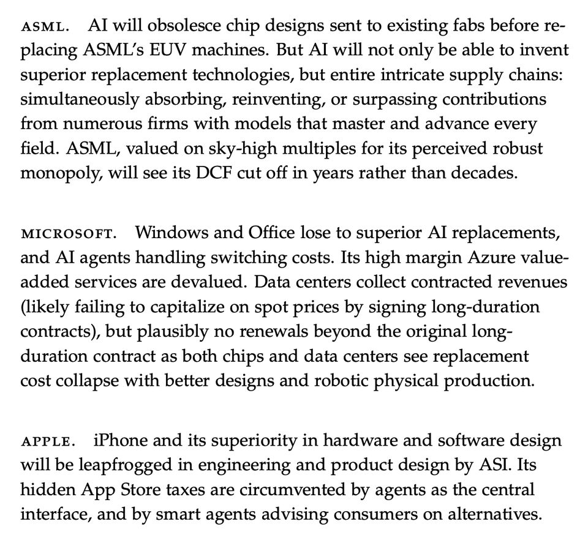
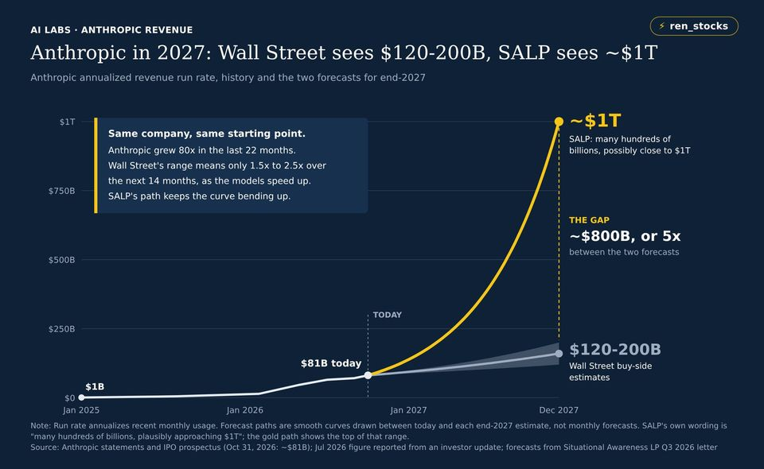
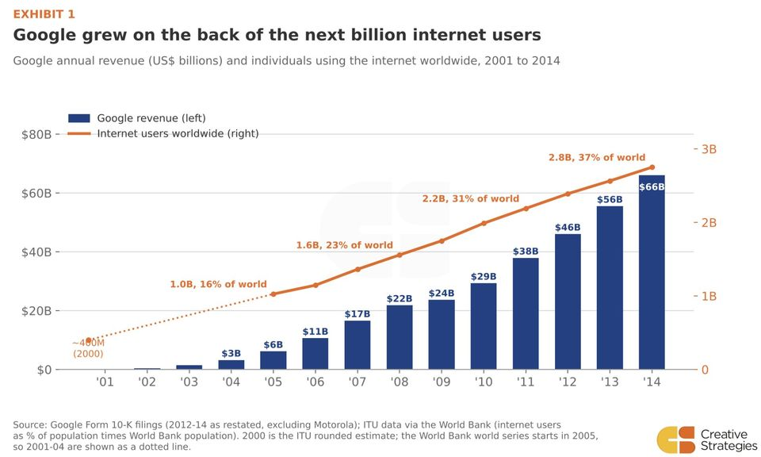
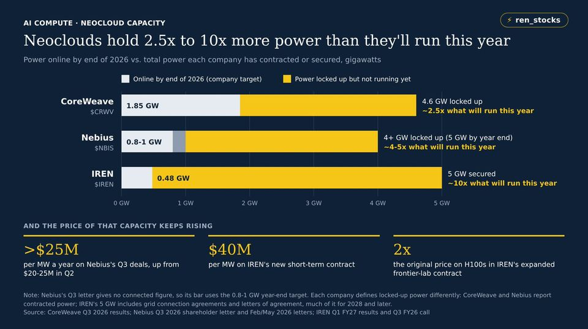
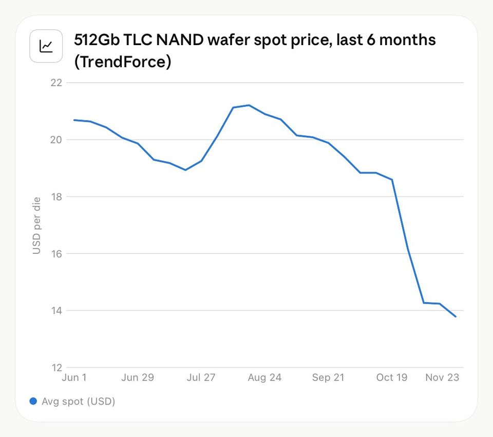

Aschenbrenner's 167-page letter: AI labs could pass a $1 trillion run rate by end-2027
Photo: @firesidealpha
Leopold Aschenbrenner's Situational Awareness LP published its Q3 letter, and it took over the investing timeline overnight. Its core claim, as quoted by @firesidealpha: Anthropic and OpenAI could together exit 2027 above $1 trillion in annualized revenue, with Anthropic alone "plausibly approaching $1T," and the market is pricing far slower AI progress than the fund expects. @FunOfInvesting called it a strong case for the compute thesis; @oguzerkan called it linear extrapolation written to persuade investors.
Older chips, higher rent: the letter says compute owners now set the price
The detail @ren_stocks flagged: by the letter's numbers, Anthropic is paying SpaceX about 60% more for the same compute than in May, on mostly older Hopper chips, with a 90-day exit clause. @firesidealpha's notes put the lease at roughly 325,000 GPUs for $1.25 billion a month. When buyers pay more for old hardware they could walk away from, ren argues, the owners of compute hold the pricing power.
Chris Camillo: the public AI story and the private one have never been further apart
"Never have I seen such a disconnect between the public narrative around AI and what I'm hearing privately," @ChrisCamillo wrote. Fear of collapse dominates X and the media, he said, while every business leader he talks to who is building and deploying AI says demand has never been stronger. In a follow-up he said he can't think of any AI news that would shift investor sentiment for good right now, because the bearish spin gets more attention.
X
Top of your feed
The most-engaged posts from your home timeline in the last 24 hours, a few per day and no more.
FAFireside Alpha@firesidealpha ·
*ASCHENBRENNER: $NVDA CANNOT SURVIVE IN ITS CURRENT FORM FOR MORE THAN A FEW YEARS ON THE CURRENT TRAJECTORY OF RSI
*ASCHENBRENNER: LABS WILL BID UP COMPONENT PRICES "TO THE POINT THAT NVDA CANNOT SECURE ADDITIONAL COMPONENTS TO PRODUCE CHIPS PROFITABLY"
*ASCHENBRENNER: AT ANTHROPIC, BRINGING UP A NEW CHIP PLATFORM USED TO TAKE DOZENS OF ENGINEERS MONTHS OF WORK. NOW IT TAKES CLAUDE A FEW DAYS
Ssourcery@sourceryy ·
Gavin Baker says SpaceX engineers believe they have solved orbital compute and are actually stressed about Starship reusability
“I think catching the Starship, that was amazing. It was a huge moment for SpaceX.”
“I will just say having spent a lot of time at Starbase, the SpaceX engineers, you know, all of these experts online are very skeptical about orbital compute, and oh the cooling and oh this. And you know, to the SpaceX engineers, they have solved those problems.” …
JSJukan @ SEMICON JAPAN@jukan05 ·
SALP:
“ASML’s cash flow will dry up in just a few years.”
“Windows and Office will lose out to better products.”
“ASI will wipe out Apple’s moat. Users will be able to bypass App Store fees, too.”
WHAT DID HE SEE? https://t.co/vKlMbzlR5b

Photo: @jukan05SSemiAnalysis@SemiAnalysis_ ·
ALERT🚨: On Dwarkesh’s (cousin) pod, Jensen said that TPU and Trainium wouldn't come to the industry-standard InferenceX benchmark, implying that their perf per $ wasn't good.
This week, both came to InferenceX, and Google & Amazon have demonstrated 1.5–2.5x better perf per $ at release compared to equivalent NVIDIA GPUs. (1/2)🧵
DDaniel@danielisdizzy ·
Some predictions:
• $ORCL becomes a $1T+ company within the next 3 years.
• $IREN fully monetizes its 5.8 GW power portfolio, surpassing a $100B market cap.
• $GRAB becomes the operating system of Southeast Asia.
• $LMND becomes the world’s largest insurer by undercutting the entire industry on premiums.
• $AMZN becomes a $10T company by 2030.
• $CBRS becomes the go-to solution for fast inference across every major AI cloud, dominating a market worth over $400B by 2030.
RRen@ren_stocks ·
$ANT
Last tweet about SALP letter.
This is exactly what I've been saying about Wall Street. It keeps failing to price a future that isn't linear.
Anthropic went from about a $1B run rate at the start of 2025 to about $81B at the end of October. That's 80x in 22 months.
Wall Street's buy side has it at $120-200B by the end of 2027. From here, that's only 1.5x to 2.5x growth in 14 months, right when the models are speeding up.
Situational Awareness LP sees many hundreds of billions, possibly close to $1T on its own.
That's an $800B gap on the same company, a year out. …

Photo: @ren_stocksBBabyfolio@babyfolio ·
$NBIS is trading at 2x 2027 revenue guidance.
They will beat that guidance easily.
I think that it's fair to say $NBIS is cheap here.
CPChamath Palihapitiya@chamath ·
It’s really quite incredible/odd that, because of the astronomical pay at all of these places, retention doesn’t approximate 100%.
Does this mean 20-40% of all of these engineers are being fired because they aren’t good? https://t.co/On6P6xptZq
one unflattering interpretation is that most of these math problems are essentially very weirdly shaped sudokus and math majors have been cleverly hiding that fact until the robot said "oh sudokus? sure we can do those" https://t.co/HOFlTOt6Ku
Vlad was a UCLA grad student making $18,000 a year when he decided to leave and start a company.
Before he took this leap of faith he asked the vice chair of the department for a leave of absence. His advice changed the trajectory of Vlad’s life:
“I was biting my fingernails off for this conversation. I still remember it vividly. If he told me he wouldn’t approve the leave of absence I would have stayed back and kept doing grad school.”
I go into his office and he said, in a thick Russian accent:
“So you want to be businessman? When I was your age, I also wanted business. I wish you could luck. You do it and we will have spot for you if it doesn’t work out.”
“He gave me the safety net I needed to make the jump.”
Partnerships are usually a waste of time for startups. Usually the only kinds you want are the two degenerate cases: where you buy someone's product, or they buy yours. Notice these are never called "partnerships." When you need that weird, special name, it's a bad sign.
In terms of laser industry dynamics:
- $LITE: "Take or pay. There's a very strong commitment from the customer side, and in some cases, there's a prepay element as well". Hyperscalers were explicitly funding their capacity expansion as well
- $COHR: Upfront payments in almost every LTA, according to its CEO.
Both Lumentum and Coherent are the gold standard in terms of financing + demand signals.
- For Chinese laser suppliers:
Optical module makers are actively financing their supply chains (even for lower range pluggables), as seen with Cambridge.
In terms of US supply chains:
- $AAOI CFO gave a note: "Customer financing is more likely for emerging technologies such as CPO and NPO than conventional 800G and 1.6T transceivers."
- $AAOI got a CPO + laser contract worth $700m for 2028-2029. But resulted in more ATMs instead of funding expansion with prepayments...
I think people can agree AOI as a business at $3.7B MC is very operationally compelling:
- since they signed a $1B-$1.5B LTA with one hyperscaler
- $2.2B LTA all in a single quarter.
But with management repeatedly creates expectations that later disclosures contrast with, which I agree is strange.
Lot of current financing (as seen with Neoclouds) are done with prepayments given tightening. Or if a supplier is important enough (as seen with $SPCX), they'll help refinance the company.
So I'm really not sure what's happening with $AAOI, maybe it's overstated competitive positioning or something else.
I still think $AAOI is looks compelling H2 2027, but their biggest problem is their own financing methods and management credibility not customer demand.
The vast majority of neoclouds will go bankrupt. A select few will become the next hyperscalers.
Hyperscalers’ owned power capacity in early 2026:
• $AMZN: 11 GW
• $MSFT: 8 GW
• $GOOGL: 7.5 GW
Expected active, revenue-generating power capacity by 2030:
• $NBIS: at least 5 GW
• $CRWV: more than 8 GW
We’re talking about hundreds of billions of dollars in annual revenue.
But scale is only half the story.
By 2030, $NBIS and $CRWV will already be extraordinarily profitable businesses.
Both companies are guiding for full-year profitability as early as 2028.
Generational wealth is made by owning the next hyperscalers before the world recognizes them as such.
$MELI just reported the best black Friday, the highest volume of sales and items sold
and 97% retention rate from last year's black friday https://t.co/Tok2t42FL9
RRen@ren_stocks ·
Can $INTC really be this good?
Google reportedly booked Intel to package 3M+ TPUs in 2028, Microsoft just went public as an EMIB customer, and CoWoS is sold out through 2027. Intel is the only real second source.
But revenue only ramps in 2H27, substrate yields were reported at 35%, and the TPU v9 could slip to 1Q28.
This is a good name to keep on a watchlist into 2H2027.
Historians will recall Google's growth was directly correlated to new internet users coming online globally each year (mostly driven by mobile internet users growing globally).
Where are we on this for adoption of AI and how compute and lab revenue is similarly correlated. Hint - we are still very early.

Photo: @BenBajarin
Your Holdings

Letter: neoclouds trade near the value of capacity they've already signed
Photo: @ren_stocks
Per @ren_stocks' reading of the Situational Awareness letter, CoreWeave, Nebius and IREN trade at roughly 1.0 to 1.2 times the value of their live and signed capacity, giving no credit for power secured but not yet sold. Nebius is targeting 0.8 to 1 GW connected against 4+ GW contracted, and signed its Q3 deals above $25 million per MW a year, up from $20-25 million in Q2.
@aleabitoreddit notes Dec. 9 ends the first two years under Micron's initial CHIPS Act agreements, which restricted buybacks; Micron has said it expects to return 100% of excess cash to shareholders and raise returns after that date. SK Hynix doubled its daily buybacks after Korea relaxed its rules. TrendForce expects conventional DRAM contract prices up 10-15% in Q4 and 3-8% in Q1 2027.

NAND spot prices keep falling
Photo: @VJNCapital
@VJNCapital points out that NAND prices continue to slide, with DDR4 8Gb spot down 7% since October. NAND makes up all of SanDisk's revenue and about a quarter of Samsung's, SK Hynix's and Micron's, and he argues the memory selloff won't stop until spot prices stabilize.
Tech & AI
SSerenity@aleabitoreddit ·
uhh... are we cooked chat?
Nature reported rumors that AI frontier labs from $ANT or OpenAI discovered algorithms capable of breaking public-key cryptography in "polynomial time"
- "In practical terms, an algorithm that could break public-key cryptography in polynomial time could undermine much of the security on which the Internet relies."
- "AI-generated algorithms could be about to break public-key cryptography, the technology central to commerce, banking and privacy."
- “I’m virtually certain, from multiple reliable sources, that the AI labs are now sitting on one or more bombshells,” said Scott Aaronson (UT Austin Chair of CS, leading theoretical computer scientist)
PIPepe Invests@pepemoonboy ·
Between 1880 and 2025, 184 open problems in math were solved.
That is 145 years of work.
In 2026 alone, 149 have been solved.
One year has nearly matched a century and a half of progress.
The next 5 years will be unimaginable… https://t.co/VxI6bVIxAI
Mark Cuban reveals he loves using Grok Bot and other AI agents to hunt down contracts through open-records requests and draft the letters for him
"Let me just tell you how much I love AI agents. So I use them all. I use Grok Bot. Eric and I are NBA fans. And so I got the Luka Doncic plan because it's $77.69 or something. I'm like, this is brilliant. Grok Bot, $77, the Luka plan. I got you. And then I have the Gemini plan. And then I had OpenAI's plan, et cetera, et cetera."
"And I use the agents and Instinct too and Dot. And I use the agents and I say, you go out and find me every state, entity, organization, enterprise that has an open records opportunity. And I want you to find me every single contract, RFP, whatever it is you can find from those entities. And I want you to write the letter to request it, put it in an email, put it in my draft. Let me personalize it some, tell me when it's there and I'll hit send."
"And it's amazing, right? Stuff that's always been at the bottom of the list that I always wanted to get to, but never could. Now it's just like this stuff is coming."
The next posts from your feed, and that’s the lot.
THThe Humanoid Hub@TheHumanoidHub ·
Robbyant just released LingBot-Navi, an open-source navigation model that keeps spatial memory across tasks.
Instead of starting from scratch, a robot can reuse what it learned on previous trips. The more it works in a familiar environment, the faster it can find targets and navigate through areas it has already explored.
For example, if a robot has previously observed and remembered a particular room, it can use that memory to navigate there on a later task rather than searching the same area again. …
PPranab@nopranablem ·
"what kind of meditation do you do" becomes a mostly irrelevant question at times, where most paths converge on Simply Letting Go
on the flipside, different aims lead to different paths for mind training, especially in the much earlier and much later ends (eg. kasina, tummo)
NCNic Cruz Patane@niccruzpatane ·
It’s kind of crazy how this is just Gen 1 of Tesla's Reality View.
It’s already really impressive, but can you imagine how much better it will get in the future? I’m talking details, latency, etc.
Elon says Reality View runs on only half of one AI4 TRIP. https://t.co/nl8BurO6YZ
DRDaniel Romero@HyperTechInvest ·
“Why didn’t I buy during the bear market? It was so obvious. I wish I could get those prices again.”
My brother in Christ, you were liking vague doomer posts online claiming that AI stocks would take 20 years to return to ATHs
MAMAHA Action@MAHA_Action ·
"MAHA is not just a slogan."
MAHA Action President Tony Lyons says MAHA has become a movement.
Billions of dollars were spent to keep Americans believing things that aren't true, and people aren't buying it anymore.
"That's a breakthrough of epic proportions because there have been billions and billions of dollars spent over the last generation to convince people of things that just aren't true."
"And that's led people to make really bad decisions and that's led to really bad health outcomes."
"So 37 states have passed MAHA laws, and that's really showing that it's become a movement." …
JMJustin Murphy@jmrphy ·
People like Ezra Klein and Nate Silver joining the AI Safety chorus at this point should decrease your confidence in it. The writing has been on the wall; at this point “pulling the alarm” is just socially calculating.
DRDutch Rojas@DutchRojas ·
Memorial Sloan Kettering reported $6.98 million in total compensation for its CEO in 2024.
Before we debate whether that is “market rate,” show me the market patients get to shop in.
Competitive pricing deserves at least as much attention as competitive pay.
RRoger@rdd147 ·
If a post starts like this and proceeds into a 3,000 word thesis… you can stop at sentence two, the other 99% is regurgitated stuff they don’t understand and will try to get you to think is true.
Nothing against this post, just happened to see it and reminded me the many times I see posts started like this.
A reading list of the letter's sharpest lines: Kioxia among the fund's largest holdings at under 1x 2027 earnings, labs eventually outbidding Nvidia for logic and memory, and an H100 that once rented for $1-2 an hour now earning $5-10 as models become virtual interns. The argument that sticks: you don't have to believe the fund's forecast, only that 2027 isn't the end of AI progress.
Horowitz tells how his 19-year-old daughter said she was too young to start a company, sitting right next to Mark Zuckerberg, who answered that he was 19 when he started Facebook. His point: the biggest thing stopping people from building a company is believing they can't. A short story worth keeping for anyone who needs permission.
News
Texas resumes data center permits before a new governor arrivesTexas resumed data center permitting after a pause on 1,800+ projects; builders are rushing to file before January.Tom's Hardware · Texas Tribune
The Passage
From your old quote bank
Soccer is simple, but it is difficult to play simple.
— Johan Cruyff
Games
Mental Math
27 × 6 = ?
65% of 360 = ?
Fermi: a sheet of printer paper is about 0.1 mm thick. How tall is a stack of 40 reams of 500 sheets?
Show answer
16227 × 6 = 20 × 6 + 7 × 6 = 162
23410% is 36, so 65% = 6 × 36 + half of 36 = 234
about 2 m40 × 500 = 20,000 sheets × 0.1 mm = 2,000 mm = 2 m
Four Cards
If a parcel is marked Express, it has a red sticker.
StandardNo stickerExpressRed sticker
Each card has one thing on each side. Which cards must you turn over to check the rule?
Show answer
Turn Express and No sticker. Express could hide something that breaks the rule; No sticker breaks it if the other side turns out to be Express. Red sticker can't break it (the rule never says only those cards have it), and Standard isn't covered by the rule at all. Most people pick the card that matches the rule's second half instead of the one that could falsify it.
Mini Crossword
12345678
Across
1 How long something has existed (3)
4 Prevent the occurrence of; prevent from happening (5)
6 Goods carried by a large vehicle (5)
7 Closely constrained or constricted or constricting (5)
8 Actively cause something to happen (3)
Down
1 A means of serving (5)
2 A deep ravine (5)
3 The cardinal number that is the sum of seven and one (5)
4 Something that people do or cause to happen (3)
5 A very small circular shape (3)
Show answer
1A2G3E4AVOI5D6CARGO7TIGHT8LET
Riddle
What has to be broken before you can use it?
Show answer
An egg.
That’s it for today.
You’ve read the whole paper. Nothing else is waiting for you.